1
«يوم بلا دفتر» — قبل وبعد فيديو 1
- الفكرة
- نعرض فوضى العيادة اليومية (مواعيد متداخلة، غياب، ديون غير مسجلة) ثم نفس اليوم مع النظام. الطبيب يرى نفسه في أول 3 ثوانٍ.
- الجمهور
- أطباء أسنان أصحاب عيادات (28–55 سنة) في العراق وسوريا والأردن — اهتمامات: طب الأسنان، تجميل الأسنان، إدارة العيادات.
- القناة
- ريلز إنستغرام + فيسبوك ممول، وتيك توك عضوي.
- الهدف
- رسائل واتساب «عرض مجاني». المؤشر: تكلفة الرسالة، ونسبة مشاهدة 3 ثوانٍ فوق 40%.
ما زلت تدير عيادتك بالدفتر والهاتف؟ 📒☎️
مواعيد متداخلة، مرضى لا يحضرون، وديون لا أحد يتذكرها…
مع Prootech يصبح يومك كله على شاشة واحدة:
✅ حجز أونلاين على مدار الساعة
✅ ملف لكل مريض مع مخطط أسنان ثلاثي الأبعاد
✅ تذكير واتساب تلقائي قبل كل موعد
جاهز لعيادتك خلال 48 ساعة.
📩 أرسل كلمة «عرض» واحجز عرضاً مجانياً لمدة 15 دقيقة.
#طب_الأسنان #عيادة_أسنان #طبيب_أسنان #إدارة_العيادات
2
«اسمك على الإنترنت» — الدومين والحجز فيديو 2
- الفكرة
- المريض يبحث «طبيب أسنان قريب مني» فلا يجد الطبيب. نعرض كتابة dr-ahmed.com وظهور موقع فخم ثم حجز خلال ثوانٍ. البيع هنا للمكانة (اسمك كعلامة) وليس للبرنامج.
- الجمهور
- أطباء شباب يفتتحون عيادة جديدة أو لديهم صفحة إنستغرام فقط.
- القناة
- ريلز ممول + حملة «Lookalike» من الأطباء الذين تفاعلوا مع الفيديو 1.
- عرض داعم
- «نحجز لك الدومين ونربطه مجاناً عند الاشتراك هذا الشهر».
مرضاك يبحثون عنك في Google… هل يجدونك؟ 🔍
موقع باسمك أنت (dr-yourname.com) فيه خدماتك، صور أعمالك، وحجز أونلاين يعمل حتى وأنت نائم.
الربط سهل: معالج عربي خطوة بخطوة — أو نربطه نحن عنك.
🎁 هذا الشهر: نحجز لك الدومين ونربطه عند الاشتراك.
📩 أرسل «دومين» ونقترح لك اسماً متاحاً الآن.
3
«غرفة انتظار VIP» — الشاشة التي تنادي باسم المريض فيديو 3
- الفكرة
- ميزة مرئية لا يملكها المنافسون: تلفاز الانتظار ينادي المريض باسمه مع تنبيه صوتي ويعرض أعمال الطبيب وعروضه. تُبهر الطبيب وتصلح للتصوير داخل عيادة حقيقية لاحقاً.
- الجمهور
- عيادات متوسطة وكبيرة (أكثر من كرسي) ومراكز تجميل الأسنان.
- القناة
- ريلز + ستوري بملصق «سؤال»: «هل تريد هذه الشاشة في عيادتك؟».
- خطوة تالية
- صوّر الشاشة في عيادة د. أيهم درويش (عميل VIP) كفيديو شهادة حقيقي.
غرفة انتظار… أم تجربة VIP؟ 📺✨
بضغطة واحدة من الطبيب، تنادي شاشة الانتظار المريض باسمه مع تنبيه صوتي، وتعرض فيديوهات أعمالك وعروض العيادة بين المواعيد.
مشمولة في نظام Prootech — دون أي تكلفة إضافية.
📩 أرسل «شاشة» لنريك إياها مباشرة.
4
«كم تخسر عيادتك كل شهر؟» — حسبة الخسارة كاروسيل 1
- الفكرة
- محتوى تعليمي قابل للحفظ والمشاركة: نحسب مع الطبيب خسارة الغياب، ووقت الهاتف، والمرضى الذين لا يجدونه — ثم نربط كل خسارة بأداة. ينتهي بدعوة «أرسل حسبة» لعرض مجاني نحسب فيه بأرقام عيادته.
- القناة
- منشور عضوي مثبّت + إعلان «Engagement» لجمع الحفظ والمشاركات، ثم إعادة استهداف من حفظوه بالفيديو 1.
- المؤشر
- عدد مرات الحفظ والرسائل التي تحتوي «حسبة».
الشرائح (1080×1350)
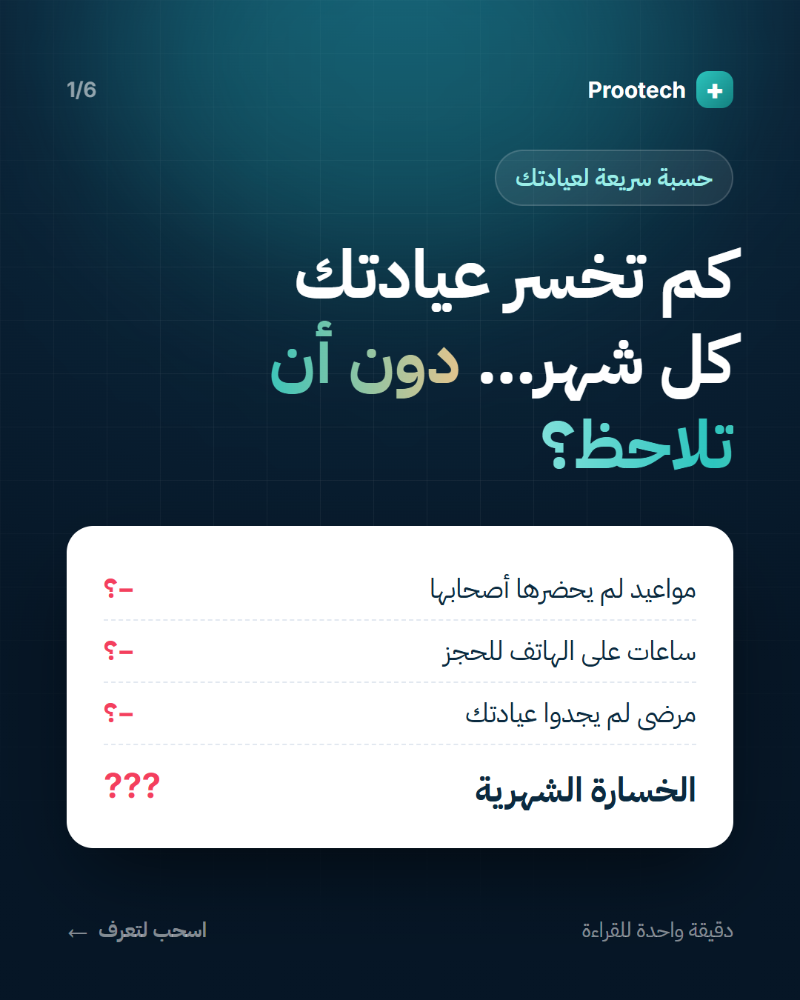
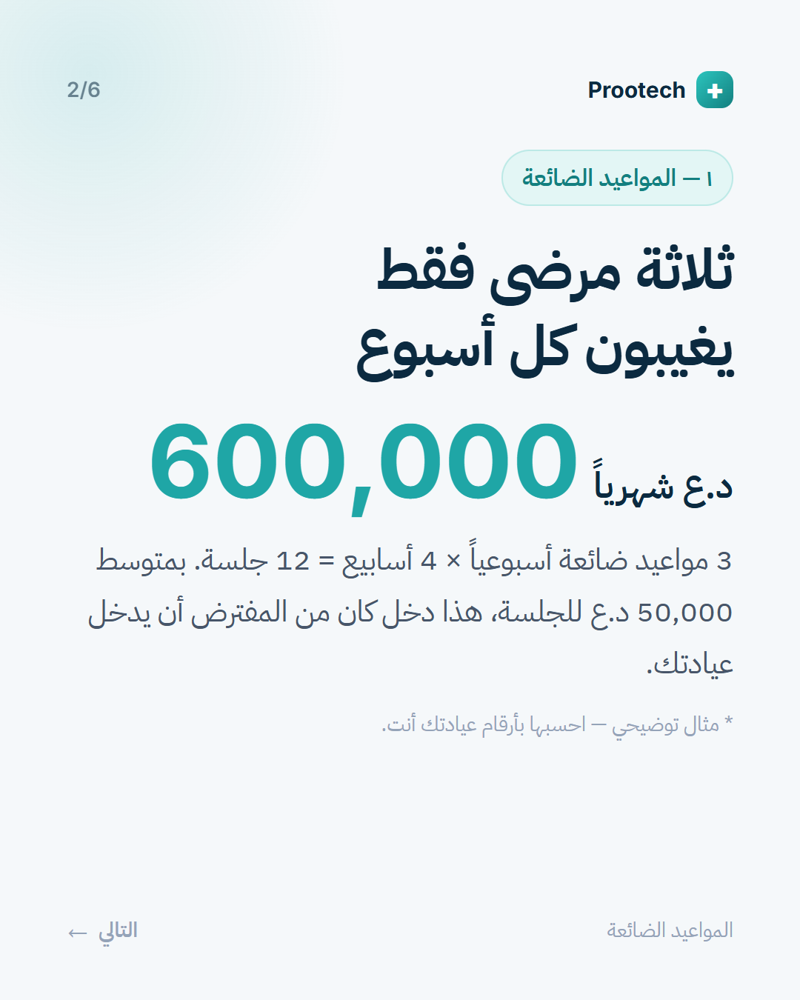
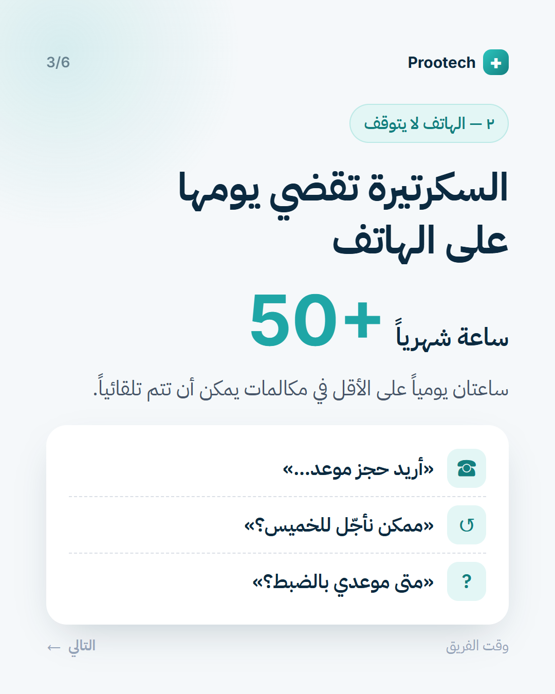
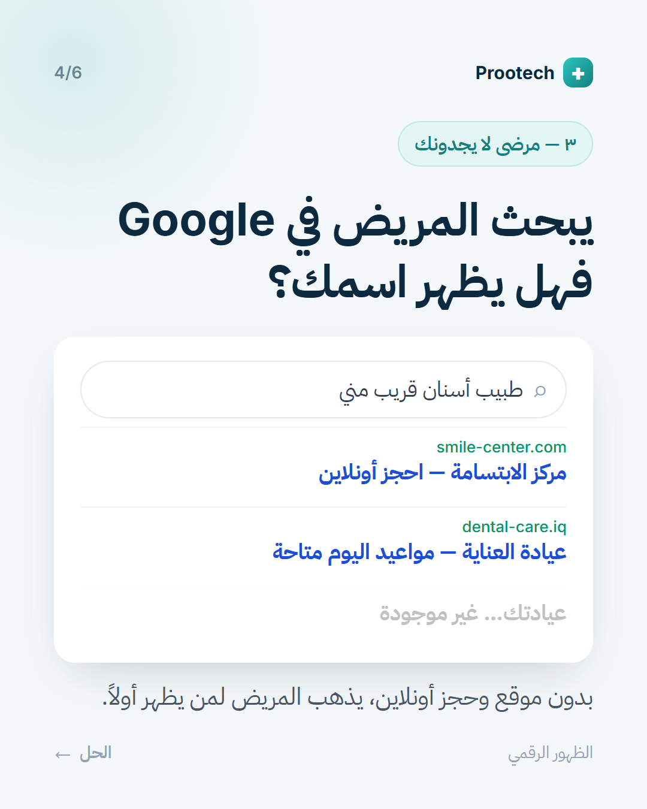
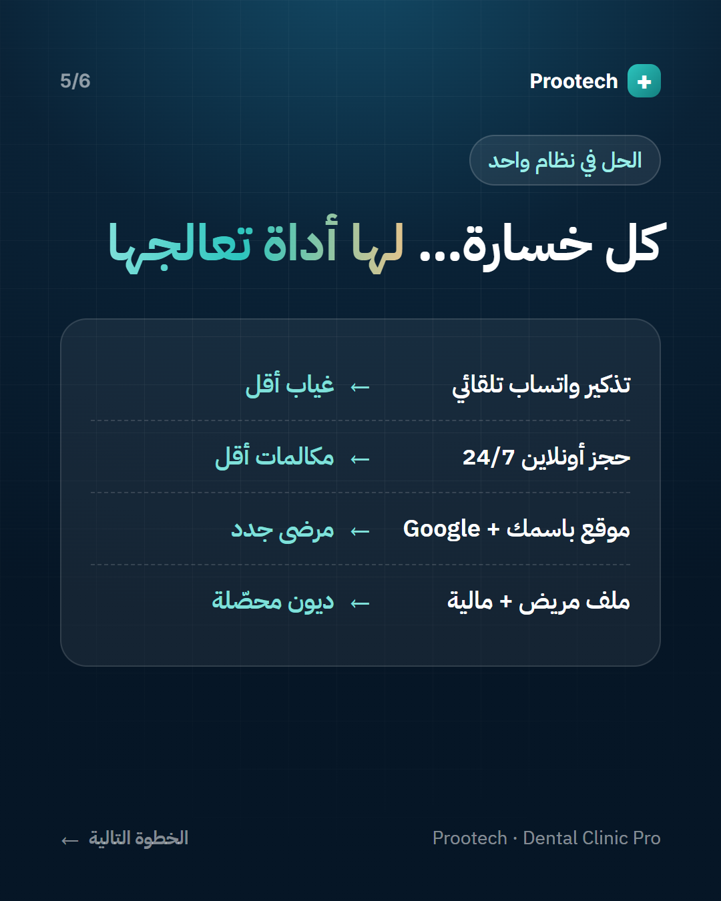
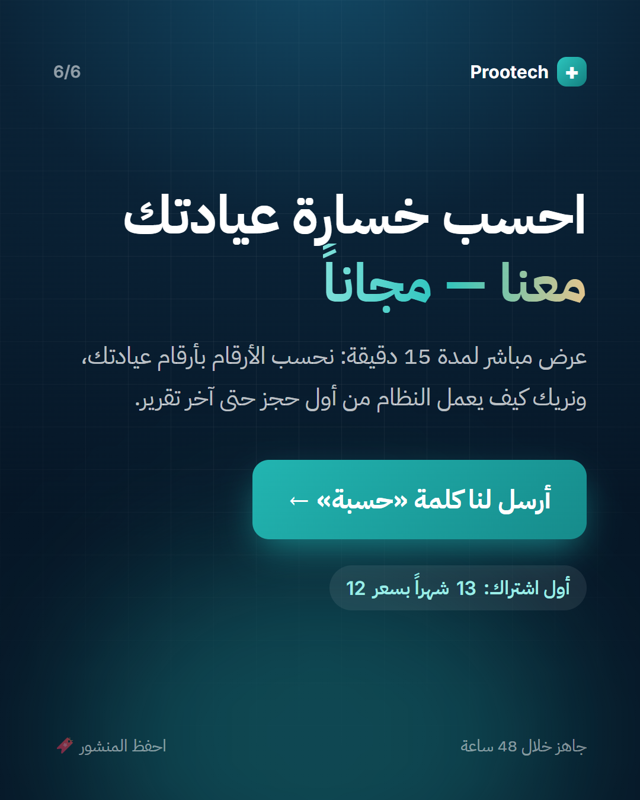
حسبة بسيطة قد تغيّر طريقة إدارتك لعيادتك 👇
3 مرضى فقط يغيبون أسبوعياً = 12 جلسة ضائعة كل شهر.
أضف إليها ساعات الهاتف والمرضى الذين لم يجدوك في Google…
احفظ المنشور 🔖 وأرسل لنا كلمة «حسبة» لنحسبها بأرقام عيادتك — مجاناً.
5
«جاهز خلال 48 ساعة + 13 شهراً بسعر 12» — عرض الإطلاق كاروسيل 2
- الفكرة
- إزالة أكبر اعتراض («معقّد وسيأخذ وقتاً») بخطة زمنية واضحة من 4 خطوات، مع عرض الاشتراك الأول (13 شهراً بسعر 12، دفع نقدي) لخلق سبب للتحرك الآن.
- القناة
- إعلان «Messages» يستهدف من شاهد 50% من أي فيديو + إرساله مباشرةً في واتساب للعملاء المحتملين في صفحة «العملاء المحتملون».
- المتابعة
- كل من يراسل يُسجَّل كـ Lead في لوحة Prootech، ثم يُنشأ حسابه من «تجهيز عيادة جديدة» وتُرسل له بطاقة التسليم عبر واتساب.
الشرائح (1080×1350)
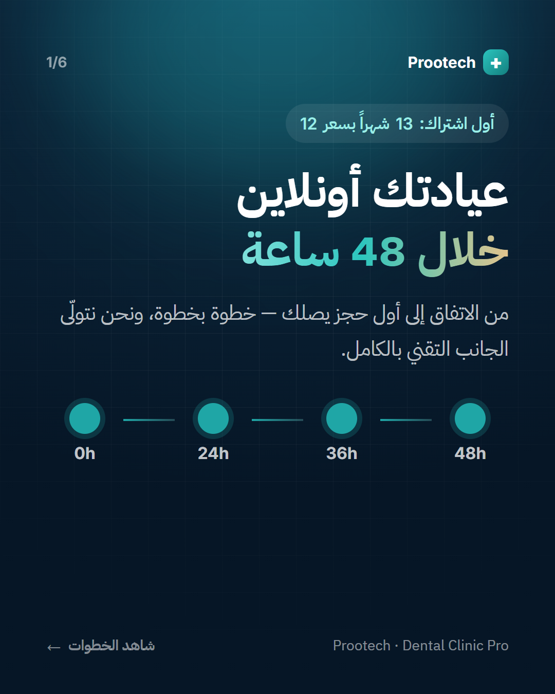
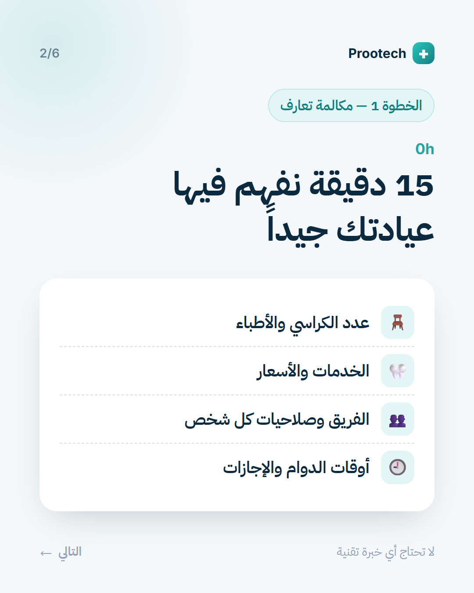
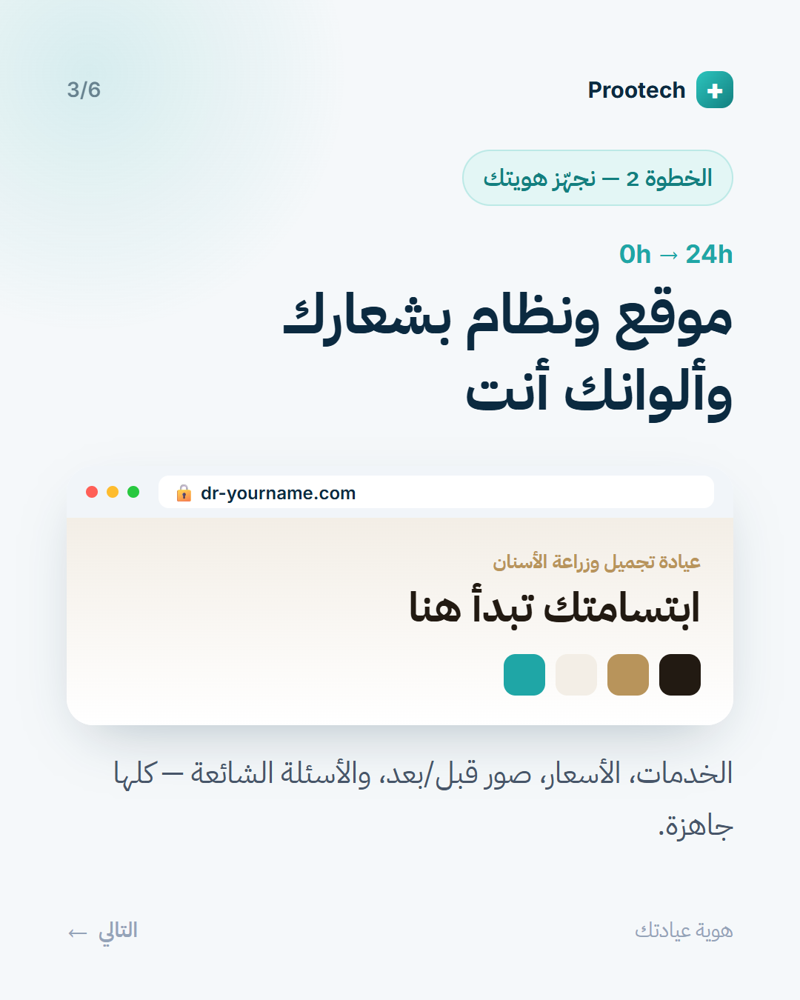
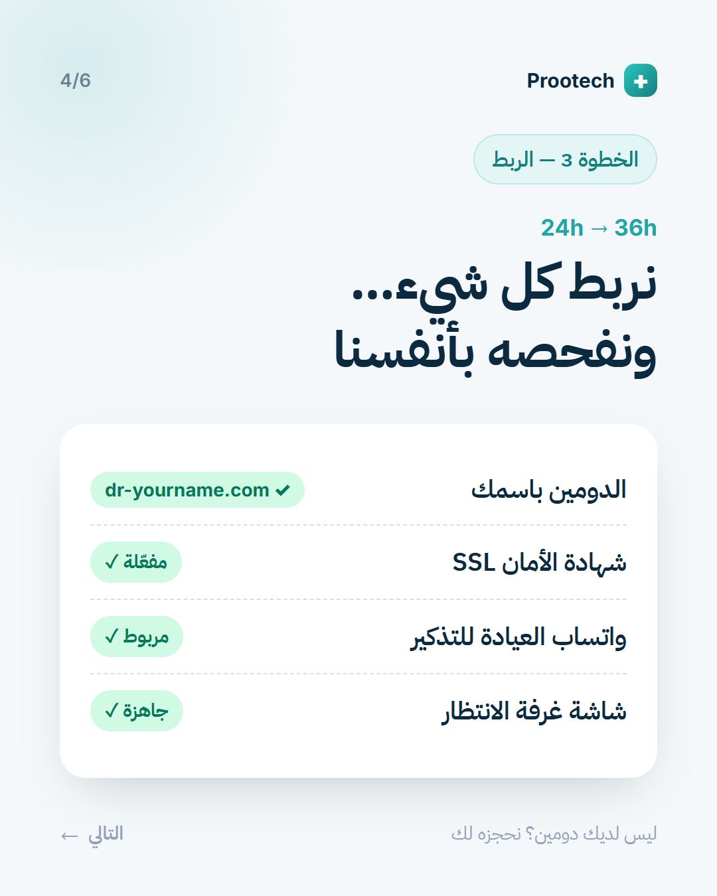
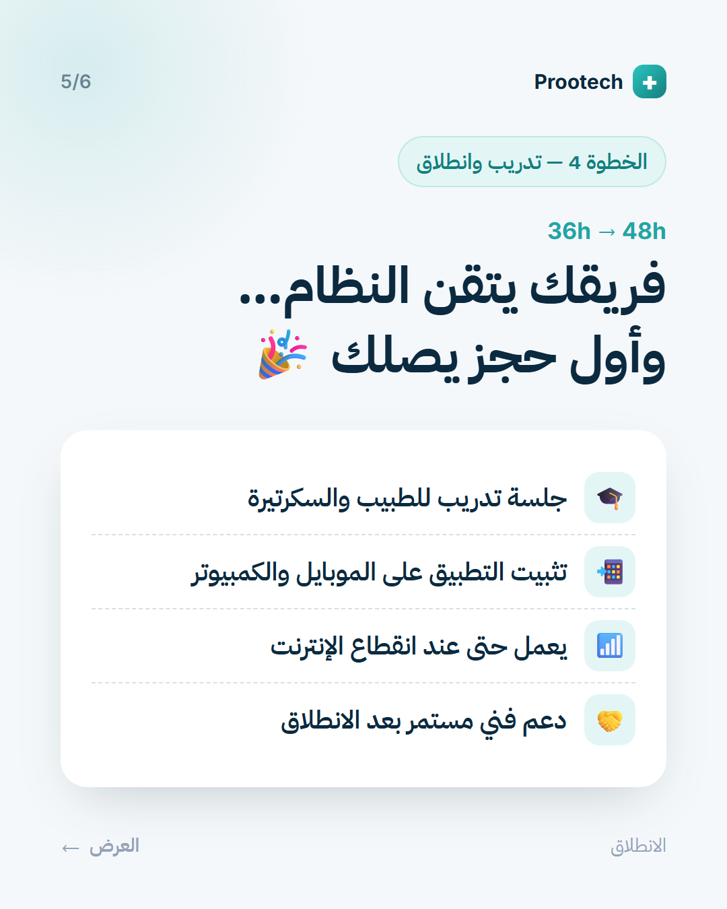
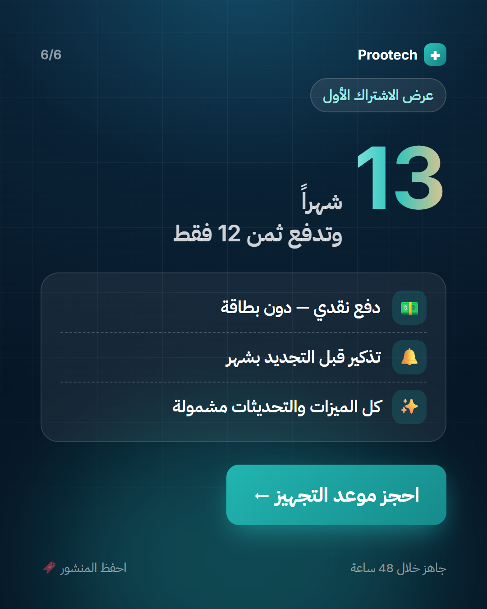
عيادتك أونلاين خلال 48 ساعة ⏱️
0h مكالمة تعارف · 24h هويتك وموقعك · 36h الدومين والواتساب · 48h تدريب وانطلاق 🎉
🎁 أول اشتراك: 13 شهراً وتدفع ثمن 12 فقط — دفع نقدي ودون بطاقة.
📩 أرسل «تجهيز» لنحجز لك موعد البدء هذا الأسبوع.
خطة النشر المقترحة — أول أسبوعين
| اليوم | المحتوى | الهدف |
|---|---|---|
| 1 | فيديو 1 «يوم بلا دفتر» — ممول | وعي + رسائل |
| 3 | كاروسيل 1 «كم تخسر عيادتك» — مثبّت | حفظ ومشاركة |
| 5 | فيديو 3 «غرفة انتظار VIP» | إبهار + ستوري تفاعلي |
| 8 | فيديو 2 «اسمك على الإنترنت» — Lookalike | رسائل «دومين» |
| 10 | كاروسيل 2 «48 ساعة + 13 شهراً» — إعادة استهداف | إغلاق البيع |
| 12–14 | متابعة كل الرسائل بعرض مباشر 15 دقيقة من صفحة الديمو | تحويل إلى اشتراك |
نصيحة: أضف موسيقى رائجة من مكتبة إنستغرام للفيديو 1 و2 (فيديو 3 يحتوي صوت النداء). المصادر قابلة للتعديل في مجلد src/ وإعادة التصدير بالأمر الموجود في README.md.